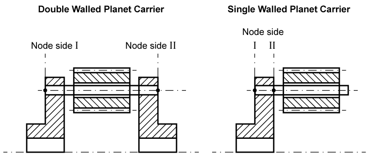
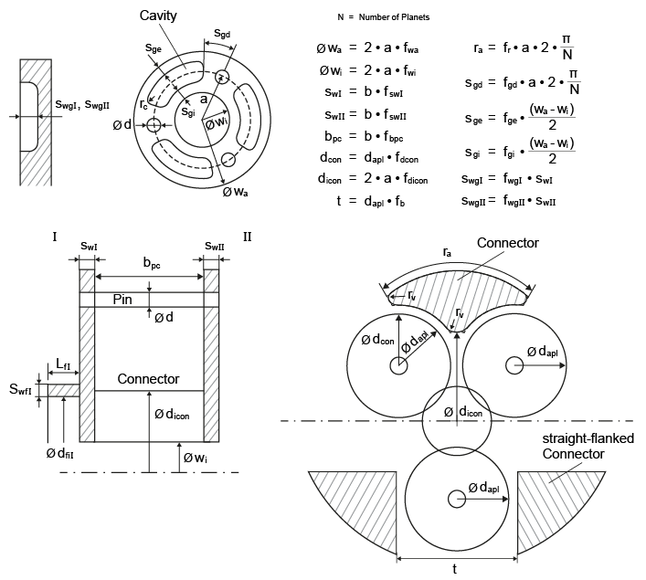

|
|
|


用 FEM 计算行星架变形
行星架的变形导致行星销变得偏移（销在dt和dr相对行星架轴线处倾斜）。使用有限元法（FEM）来计算精确的行星架变形。此处有多种不同的选项可供选择：
- 计算得到的 FEM 结果可直接作为点坐标和点变形输入（双侧行星架在 I 侧和 II 侧各一个节点；单侧行星架在一侧有两个节点（见图））。

图15.22：行星架选项卡
- 导入包含行星架变形的 FEM 结果文件。然后从该文件中提取两个节点的变形数据。节点坐标不需要指定得非常精确。相邻节点的变形数据被转移。
输入行星架的一些基本尺寸。KISSsoft 随后以 3D 方式生成行星架，并使用相对扭矩来确定行星架的变形。
输入以下数据：
单侧或双侧行星架
销直径 (d)
行星架外径系数 (fwa)
行星架内径系数 (fwi)
行星架壁厚系数（I 侧和 II 侧可以不同）(fswl 和 fswll)
行星架宽度系数 (fbpc)
行星架连接件系数 (fdcon)
行星架内部连接件系数 (fdicon)
I 侧外法兰直径 (dfaI)
I 侧法兰长度 (LfI)
I 侧法兰壁厚 (SwfI)
II 侧外法兰直径 (dfaII)
II 侧法兰长度 (LfII)
II 侧法兰壁厚 (SwfII)
行星架材料（从数据库中选择）。
这些系数均可在“Details”下输入，既可以作为系数输入，也可以直接作为尺寸输入。
您还可以点击“Dimension planet carrier”和“Dimension flange”按钮显示这些数据的标准条目。
此外，您还可以设置网格细度。
这些系数和尺寸将在下图中更详细地显示。根据扭矩方向的输入方式，对于单侧行星架，I 侧或 II 侧可能并不需要。

图15.23：行星架的系数和尺寸
除上述行星架变体外，您还可以直接输入行星架的阶梯模型。
此处需要注意的是，行星架被夹持在法兰的内径上。如果没有法兰，则夹持在行星架的内径上。如果这两个直径相同，则夹持在法兰的整个长度和行星架的内径上。如果使用阶梯模型，则夹持在指定的法兰直径上。
Calculating planet carrier deformation with FEM
The deformation of the planet carrier causes the planet pin to become misaligned (the pin tilts at dt and dr relative to the planet carrier axis). Use the Finite Elements Method (FEM) to calculate the exact planet carrier deformation. A range of different options are available here:
- The calculated FEM results can be input directly as point coordinates and point deformations (one node for each of side I and side II on a two-sided planet carrier; two nodes on one side for a one-sided planet carrier, (see Figure)
Figure 15.22: Planet carrier tab
- Import the file with the FEM results for the planet carrier deformation. The deformations in both nodes are then extracted from this file. The node coordinates do not need to be specified exactly. The deformation data of the adjacent node is transferred.
Input some of the planet carrier's fundamental dimensions. KISSsoft then generates the carrier in 3D and uses the relative torque to define the planet carrier's deformation.
Input this data:
Single- or two-sided planet carrier
Pin diameter (d)
Coefficient for the external diameter of the planet carrier (fwa)
Coefficient for the inside diameter of the planet carrier (fwi)
Coefficient for the wall thickness of the planet carrier, which may be different for side I and side II (fswl and fswll)
Planet carrier width factor (fbpc)
Coefficient for planet carrier's connector (fdcon)
Coefficient for the planet carrier's internal connector (fdicon)
External flange diameter on side I (dfaI)
Flange length on side I (LfI)
Flange wall thickness on side I (SwfI)
External flange diameter on side II (dfaII)
Flange length on side II (LfII)
Flange wall thickness on side II (SwfII)
Planet carrier material (select this from the database).
These coefficients can all be input under "Details", either as coefficients or directly, as dimensions.
You can also click on the "Dimension planet carrier" and "Dimension flange" buttons to display standard entries for this data.
Remember that you can also set the mesh fineness.
The coefficients and dimensions are shown in greater detail in the next figure. Depending on how the direction of torsion is entered, side I or side II may not be required for a one-sided planet carrier.
Figure 15.23: Coefficients and dimensions for planet carriers
In addition to the carrier variants shown above, you can also input a step model of the carrier directly.
The point to remember here is that the carrier is clamped on the internal diameter of the flange. If no flange is present, it is clamped on the internal diameter of the planet carrier. If both these diameters are identical, it is clamped along the entire length of the flange and the internal diameter of the carrier. If a step model is used, it is clamped at the specified flange diameter.